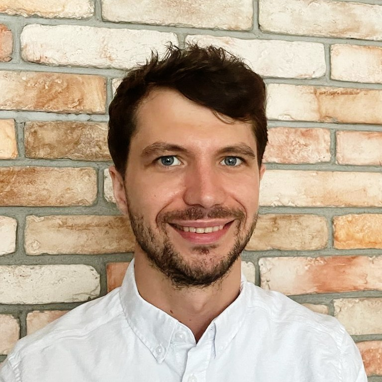

Chris Zalewski
Workday Learning, Talent & Performance, Report Writer, Assoc. CIPD

About Me
Systems were always my strength, I find them intuitive and easy to use, I have 6 years of Workday experience. Currently I am managing Workday enhancements projects and configuring solutions in Learning, Talent & Performance space. I am enhancing Workday Reports, Dashboards, Business Processes and Notifications. I worked on implementation of Workday Absence and Recruitment modules, administered HCM and Recruitment modules.
My experience was gained in multinational, diverse environments, where I worked across different business units with multiple stakeholders. I led numerous projects and processes. Combined with passion for operational excellence and customer experience delivery it allowed me to develop a versatile set of skills.
I am a CIPD certified professional with experience across all HR processes. My can-do attitude allows me to quickly adapt to change, improve processes, efficiently implement systems and ideas. I am looking to add value through configuration projects, advising on best practice, establishing, improving and executing slick processes within organizations.
Work Experience
Workday Learning Manager / Project Manager
(Pratt & Whitney) - Feb 2022 - Present
- Workday Learning Enhancements Lead developer and project manager
- Configured multiple Workday Learning Enhancements in the following areas: Reporting, Dashboards, Business Processes and Notifications
- Working with Learning Senior Stakeholders and Learning Administrators community to deliver new solutions, enhance existing ones and fix broken configurations
- Investigation and configuration of security to share & secure solutions for multiple learning administrator security groups
- Workday Talent & Performance developer: Performance and Talent reports, Performance Review process, Check-ins, Manager Insights Hub, Goals management & archiving
- Workday Report writer with calculated fields experience
- Last Tier of support for Workday Learning Malfunction Tickets in ServiceNow ticketing Enterprise Cloud
- Held the following security (among others): Business Process Administrator, Catalog Administrator, Extended Enterprise Administrator, HR Administrator, Implementers, Proxy Access User - All, Report Writer, Security Administrator, Security Configurator, Setup Administrator, Talent Administrator
- Creation of Release Notes, Workday Learning Job Aids and other documentation
- PM tools utilized: Serena Business Manager, JIRA, MS Project
Associate
(Intermediate Capital Group) - Apr 2018 - Jan 2022
- Established HR Operations processes in Poland after transitioning them from the UK
- Advising internally and working with a 3rd party implementation team to implement Workday Absence and Recruitment modules
- Undergoing CIPD and Workday training, advising on optimization of Workday recruiting module
- Revamping and integrating historical data from different HR systems for reporting purposes
- Trained the HR Operations team upon expansion in Warsaw
- Reporting on ad-hoc, weekly, monthly and quarterly basis on key HR metrics for the group
HR Specialist
(Coca-Cola Poland Services) - Mar 2016 - Mar 2018
- Working with Workday team to implement Absence module
- End-to-end administration of all available local country benefits programs, as well as global programs applicable in the location
- Delivering training sessions on Compensation & Benefits processes, current structure and Shared Service Center HR model
- Responsible for preparing Job Aids (Standard Operating Procedures)
- End to end training deployment process and assistance in strategy execution
- Training needs analysis and initiation of talent assessments
- Communicating with professionalism while building a trusted relationship to become the first and main point of contact for HR Directors, Strategic Business Partners and Talent & Development Managers
Test Associate
(Lionbridge Poland) - Apr 2015 - Mar 2016
- Finding software malfunctions and providing feedback to ensure high product quality
- Test cases' actualization, regression and change list verification
- Preparing individual and group reports
- Preparing, reviewing and editing tests instructions and test cases for testers via Microsoft Visio
Education
SGH Warsaw School of Economics
Master's Degree, E-Business, Grade: 4.5
University of Warsaw
Bachelor's Degree, Accounting and Finance, Grade: 4.5
Top Skills